Hvad systemet kan, hvad de forskellige skærmbilleder viser, og hvad tallene betyder
Åbn ARCtime i browseren og log ind. I drift logger man ind med sin Microsoft-konto fra firmaet (samme login og to-trinsbekræftelse som Outlook og Teams). I testversionen bruges e-mail og adgangskode.
Menuen i venstre side er delt i grupper: Min tid, Godkendelse og planlægning, Projekter og kunder, Økonomi, Rapporter og indsigt og Administration. Du ser kun de punkter, din rolle giver adgang til – en medarbejder ser derfor en kort menu, Økonomi en lang. Øverst til højre skifter du mellem dansk (DA) og engelsk (EN) og logger ud.
En person kan have flere roller (fx både projektleder og nærmeste leder). Alle er også “medarbejder” og kan registrere tid.
| Rolle | Typiske opgaver | Ser blandt andet |
|---|---|---|
| Medarbejder | Registrere timer, fravær, udlæg og kørsel. Indsende ugen. | Egen uge, egne udlæg, projekter man er med på, egne rapporter |
| Projektleder | Opbygge projekter og budgetter, godkende timer på egne projekter (hvis det er slået til), forberede fakturaer, styre faktureringsplanen. | Egne projekter, Sagsøkonomi og Debitorliste for egne sager, fakturakladder for egne projekter |
| Nærmeste leder | Godkende ugesedler og udlæg for sine medarbejdere, planlægge ressourcer. | Godkendelse, Ressourceplan, eget teams nøgletal |
| Økonomi | Fakturere og bogføre, kreditere, lukke måneder, lønoverførsel, prislister, betalinger og rykkere. Har desuden import af medarbejdere og hele revisionssporet. | Alt økonomi – alle sager, fakturaer og debitorer, virksomhedens nøgletal |
| Ledelse | Følge forretningen. | Alle sager og nøgletal – læseadgang |
| Administrator | Opsætning: normtid, helligdage, fraværskoder, godkendelsesform, roller, GDPR. | Indstillinger, Medarbejdere, Revisionsspor. (Bogfører ikke – det gør Økonomi.) |
Forsiden samler det, der er vigtigt for dig lige nu. Indholdet afhænger af din rolle.
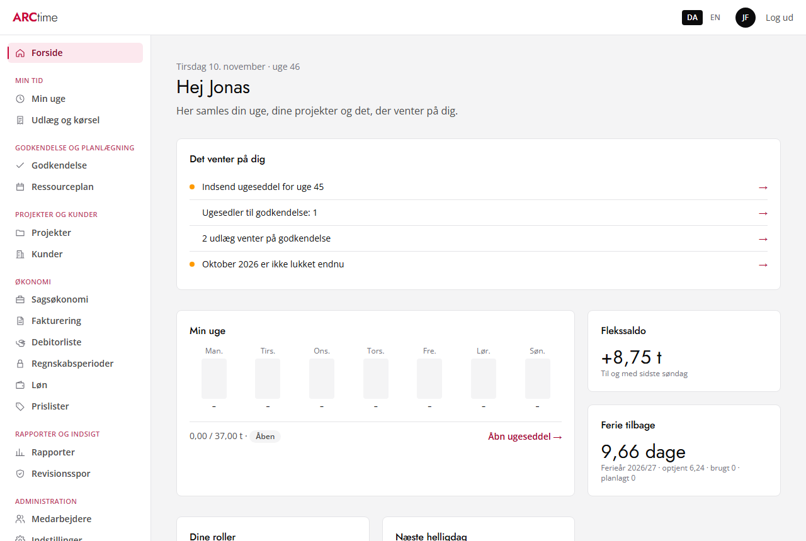
| Område | Hvad det viser |
|---|---|
| Det venter på dig | Opgaver med et link til, hvor de klares: ugeseddel der skal indsendes, ugesedler og udlæg der skal godkendes, fakturaer klar til bogføring, måneder der ikke er lukket. En orange prik betyder, at noget haster. |
| Min uge | Timer pr. dag i denne uge, registreret mod normtid og ugens status. “Åbn ugeseddel” fører til Min uge. |
| Flekssaldo | Din samlede flex til og med sidste søndag (+ = du har timer til gode). |
| Ferie tilbage | Feriedage tilbage i ferieåret – optjent, brugt og planlagt. |
| Nøgletal | Ledere ser deres teams faktureringsgrad. Økonomi og Ledelse ser hele virksomhedens tal: faktureringsgrad, fakturerbar andel, faktureret omsætning sidste måned, effektiv timepris og udviklingen over 12 uger. |
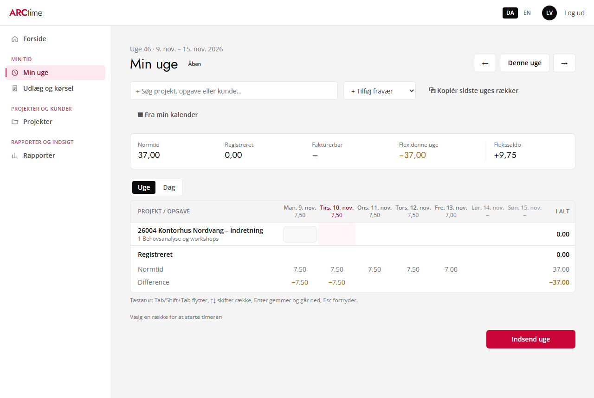
| Felt | Betydning |
|---|---|
| Normtid | Ugens forventede timer (helligdage er trukket fra). |
| Registreret | Alle registrerede timer i ugen, inkl. fravær. |
| Fakturerbar | Andel af timerne på fakturerbare opgaver. |
| Flex denne uge | Registreret minus normtid. Orange/negativ = under normtid. |
| Flekssaldo | Din samlede saldo. |
Under tabellen ses linjerne Registreret, Normtid og Difference pr. dag. Skiftet Uge / Dag giver en dagsvisning med kommentarfelter.
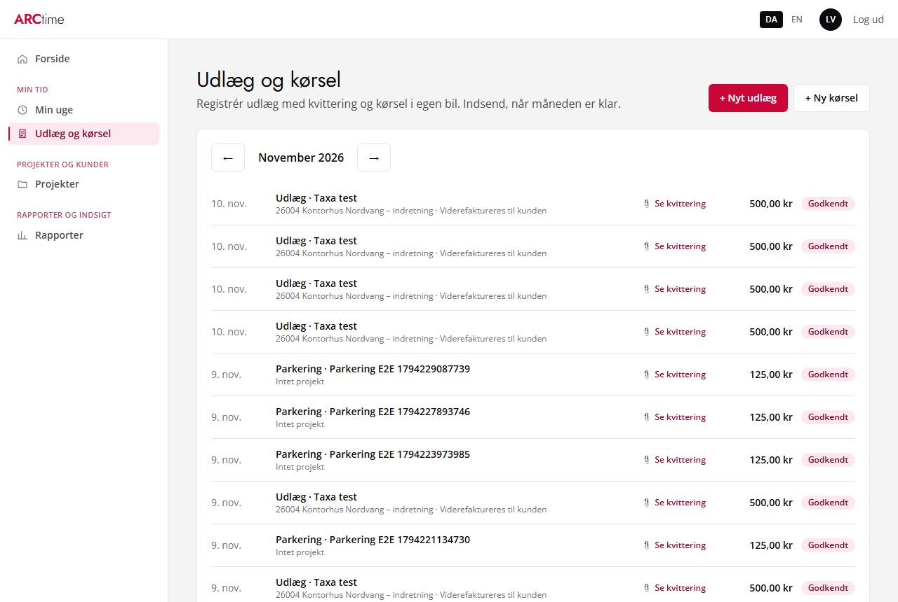
Status pr. udlæg: Kladde Indsendt Godkendt Afvist. “Se kvittering” åbner det vedhæftede bilag.
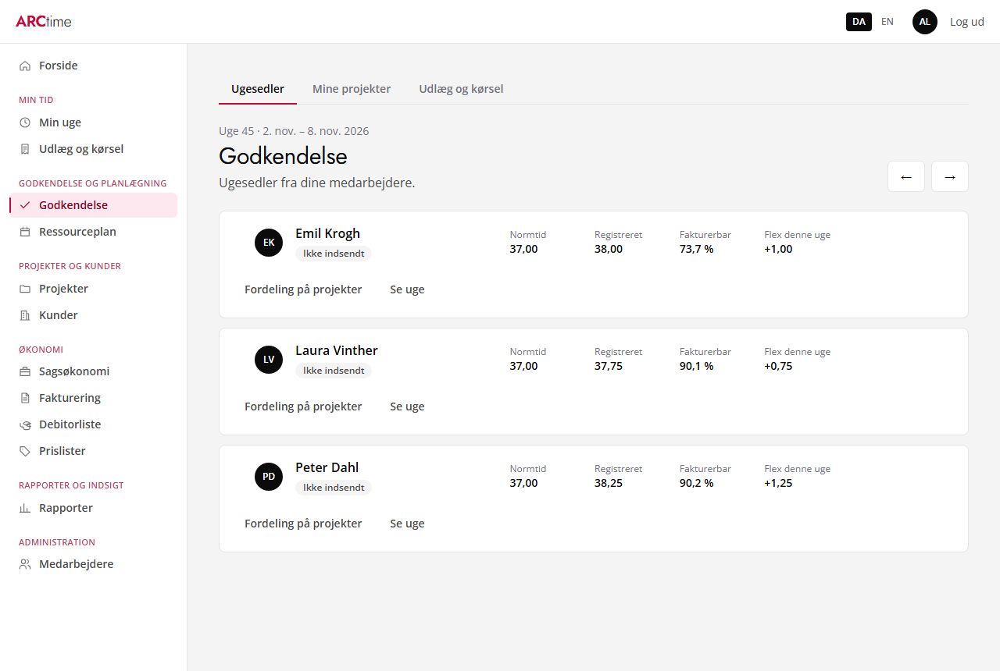
Siden har tre faner:
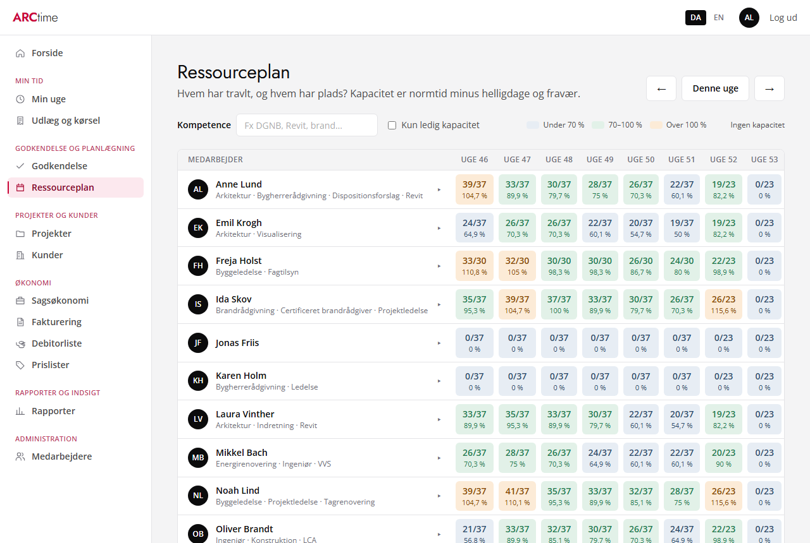
Hver celle viser planlagte timer / kapacitet og belægningen i procent for en medarbejder og en uge. Kapacitet er normtid minus helligdage og fravær.
| Farve | Betydning |
|---|---|
| Blå | Under 70 % – der er plads. |
| Grøn | 70–100 % – godt udnyttet. |
| Orange | Over 100 % – overbooket. |
| Grå / 0 | Ingen kapacitet (fx ferie). |
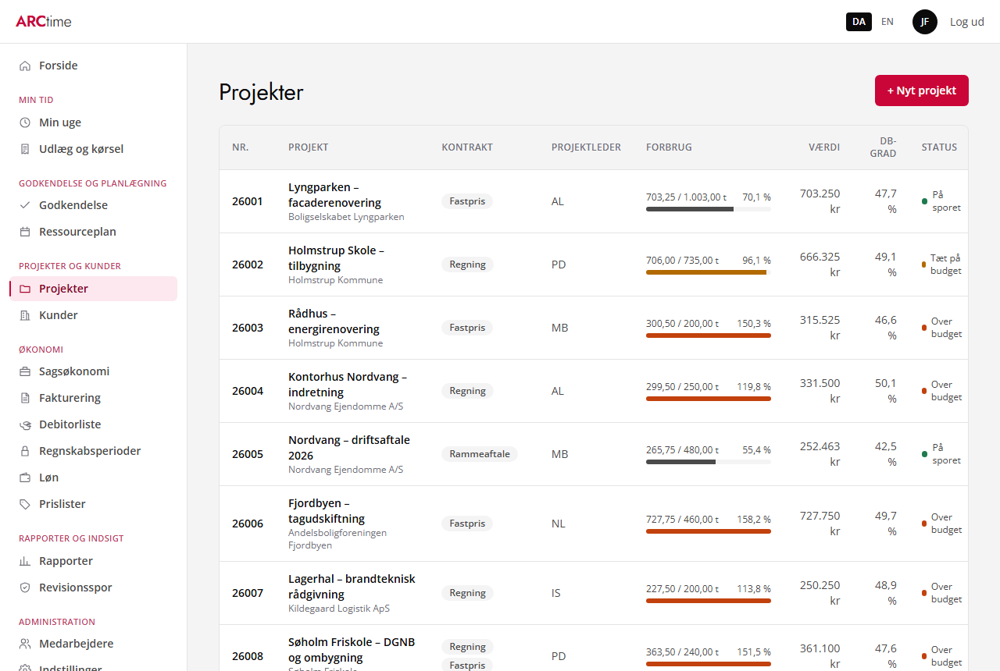
| Kolonne | Betydning |
|---|---|
| Kontrakt | Medgået tid = timer × timepris, Fastpris = fast honorar. Nye sager oprettes som en af de to; ældre sager kan stadig vise Rammeaftale (fast beløb pr. periode). En sag kan have flere kontrakter (fx fastpris + ekstraarbejde på medgået tid). |
| Forbrug | Brugte timer / budgetterede timer og procent. Bjælken bliver orange tæt på budget og rød over budget. |
| Værdi | Brugte timer × timepris. |
| DB-grad | Dækningsbidraget i procent af værdien. |
| Status | ● På sporet · ● Tæt på budget · ● Over budget · Intet budget. |
+ Nyt projekt kan bruges af Økonomi, Admin og projektledere med rettigheden “opret projekter”. Vælg kontrakttype (Medgået tid eller Fastpris) og om sagen viderefaktureres til kunden (Ja/Nej – skal vælges). Ved Nej registreres timerne og tæller i kostprisen, men de har ingen fakturerbar værdi og kommer aldrig på en faktura. En intern sag uden kunde er altid Nej.
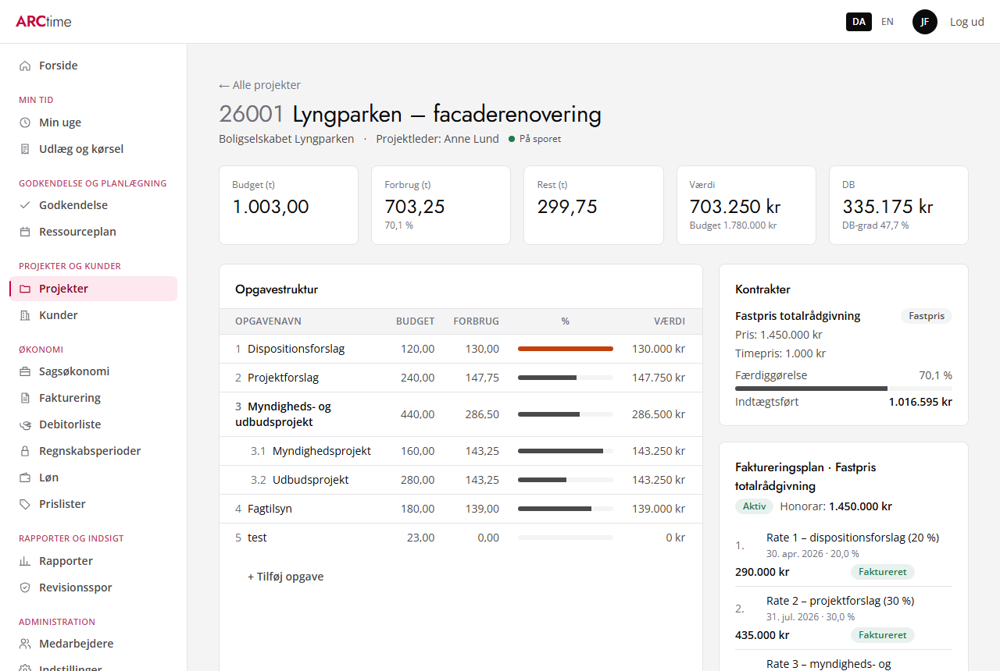
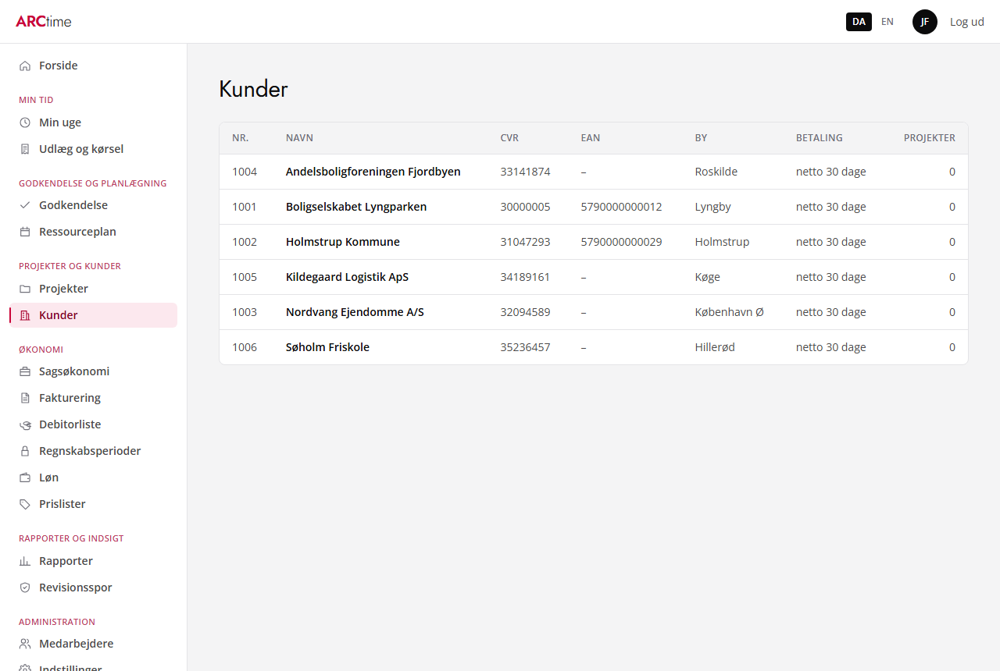
Betalingsbetingelsen (fx netto 30 dage) bestemmer fakturaens forfaldsdato. EAN-nummer bruges til elektronisk fakturering til offentlige kunder.
Sagsøkonomi giver Økonomi et samlet overblik over alle sager: honorarform, timer, forbrugt, faktureret, hvad der kan faktureres nu, og hvordan det går med de faste honorarer. Økonomi og Ledelse ser alle sager, en projektleder kun de sager, vedkommende er projektleder på. Medarbejdere ser ikke modulet.
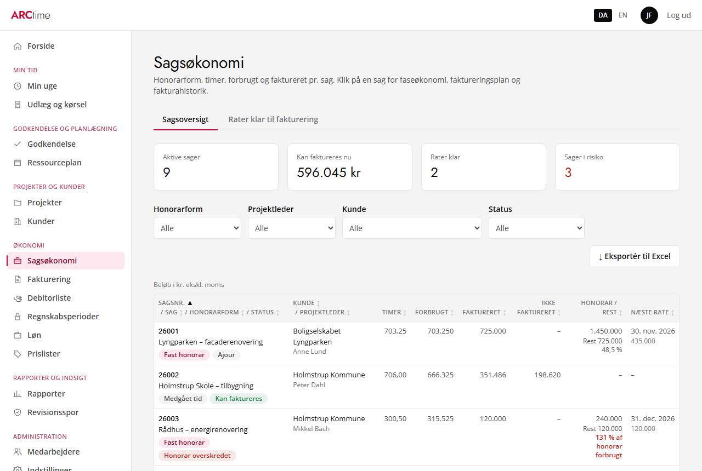
| Kort øverst | Betydning |
|---|---|
| Aktive sager | Antal sager med status aktiv (efter filtrene). |
| Kan faktureres nu | Ikke fakturerede godkendte timer på medgået tid + rater, der er klar. |
| Rater klar | Antal rater, der kan faktureres nu. |
| Sager i risiko | Sager med Overskridelsesrisiko eller Honorar overskredet. |
| Kolonne | Betydning |
|---|---|
| Sagsnr. / sag | Nummer og navn, med honorarform og status som mærker under navnet. |
| Kunde / projektleder | Kunden med projektlederen nedenunder. |
| Timer | Alle registrerede timer på sagen (afviste tæller ikke). |
| Forbrugt | Fakturerbare timer × timepris. |
| Faktureret | Bogført på sagen, ekskl. moms, minus kreditnotaer. |
| Ikke faktureret | Godkendte timer på medgået tid, der ikke er faktureret endnu. Tallet falder til 0, når fakturaen bogføres. |
| Honorar / rest | Kun fast honorar: honoraret, resthonoraret og hvor stor en del af honoraret der er forbrugt. |
| Næste rate | Dato og beløb for den næste rate, der ikke er faktureret. |
Alle beløb er i kr. ekskl. moms. Klik på en overskrift for at sortere (klik igen for omvendt rækkefølge). Filtrér på honorarform, projektleder, kunde og status. Totalrækken nederst summerer altid de rækker, der vises. Hent som Excel (.xlsx) giver de samme rækker og filtre som en Excel-fil med totalrække. Hent som CSV er til import i andre systemer.
| Status | Hvornår |
|---|---|
| Honorar overskredet | Forbrugt er over alarmgrænsen (standard 100 % af det faste honorar). |
| Overskridelsesrisiko | Forbrugt har nået advarselsgrænsen (standard 75 %), fx “76 % af honorar forbrugt”. |
| Rate klar | En rate i faktureringsplanen kan faktureres. |
| Kan faktureres | Der er godkendte, ikke fakturerede timer på medgået tid. |
| Ajour | Intet at gøre lige nu. |
Har en sag flere ting på én gang, vises den mest alvorlige status (rækkefølgen ovenfor). Økonomi kan ændre de to grænser.
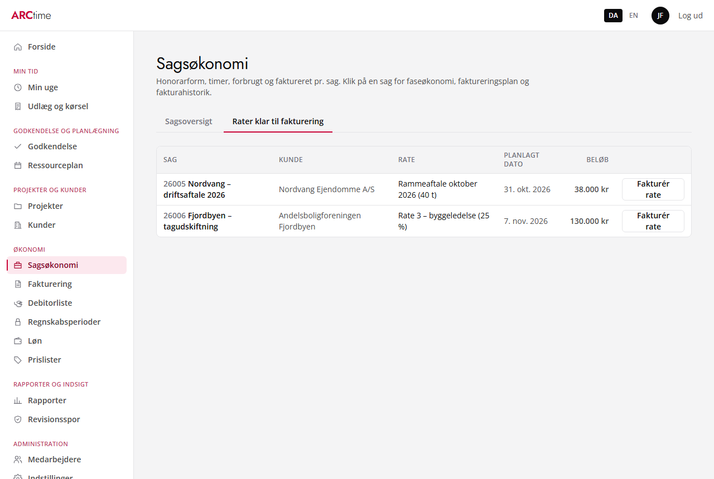
Fakturér rate opretter straks en fakturakladde med én linje for raten. Kladden findes under Fakturering → Kladder, hvor den gennemses og bogføres.
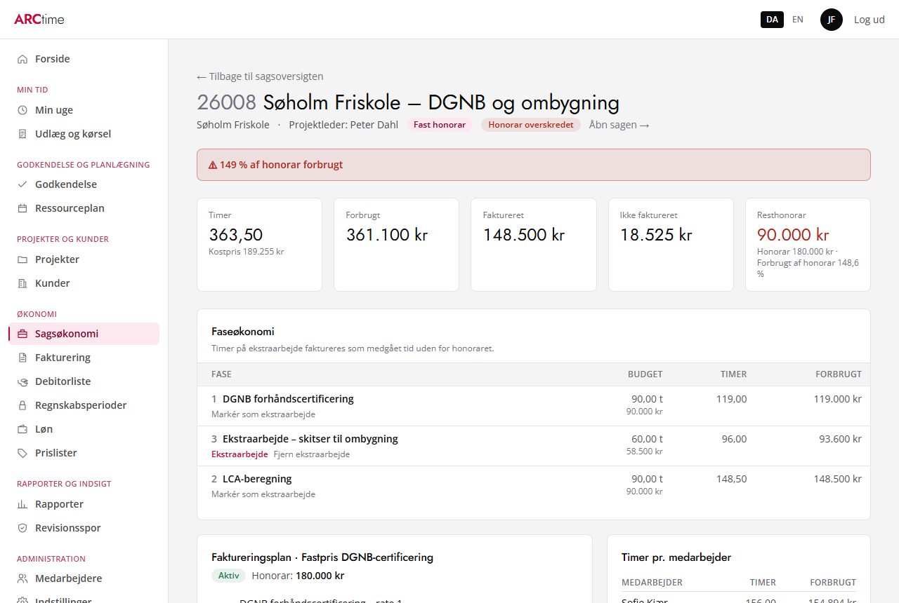
Planen deler det faste honorar op i rater. Hver rate har et navn, en andel (procent af honoraret eller et beløb), en planlagt dato og eventuelt en tilknyttet fase.
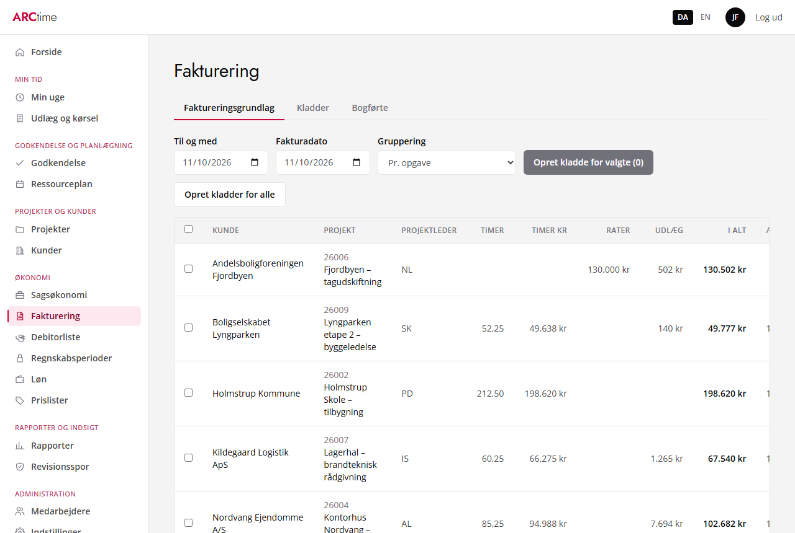
Siden har tre faner. Feltet Søg sag øverst virker på alle tre: skriv et sagsnummer (fx 26010), et sagsnavn, en kunde eller et fakturanummer for at se netop de sager. Søgningen følger med, når du skifter fane.
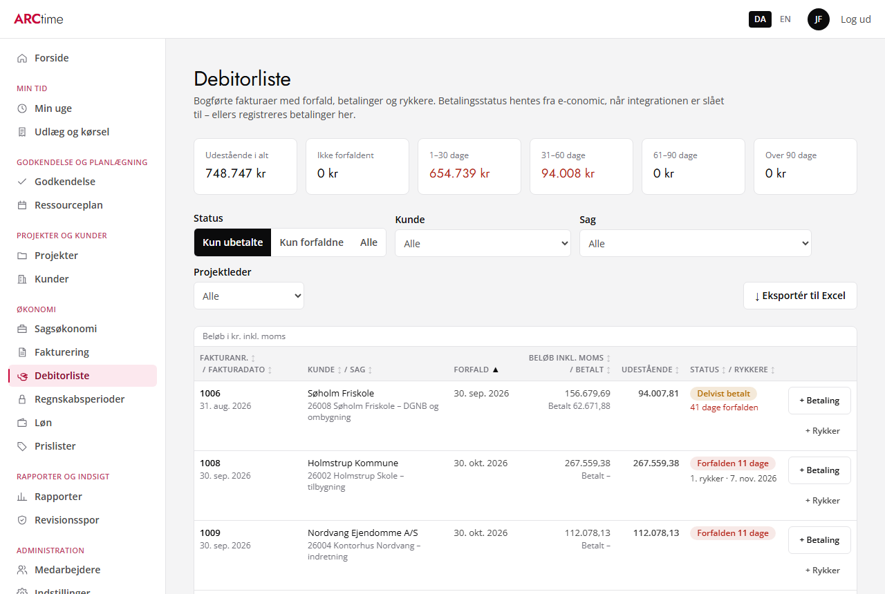
Debitorlisten viser alle bogførte fakturaer med forfaldsdato, betaling og rykkere. Beløbene er i kr. inkl. moms. Kun Økonomi kan registrere betalinger og rykkere; projektledere ser fakturaerne på egne sager. Når integrationen til e-conomic er slået til, hentes betalingerne automatisk med Hent betalinger fra e-conomic – indtil da registreres de her.
Udestående i alt fordelt på: Ikke forfaldent · 1–30 dage · 31–60 dage · 61–90 dage · Over 90 dage efter forfald. Røde tal betyder, at der er forfaldne beløb i gruppen.
| Status | Betydning |
|---|---|
| Åben | Ikke betalt, men endnu ikke forfalden. |
| Forfalden 6 dage | Forfaldsdatoen er passeret, og intet er betalt. Fx forfald 4. nov. set 10. nov. = 6 dage (gruppen 1–30 dage). |
| Delvist betalt | En del er betalt – udestående er resten. Er den også forfalden, står antallet af dage nedenunder. |
| Betalt | Fuldt betalt. |
| Krediteret | Udlignet med kreditnota – intet at betale. |
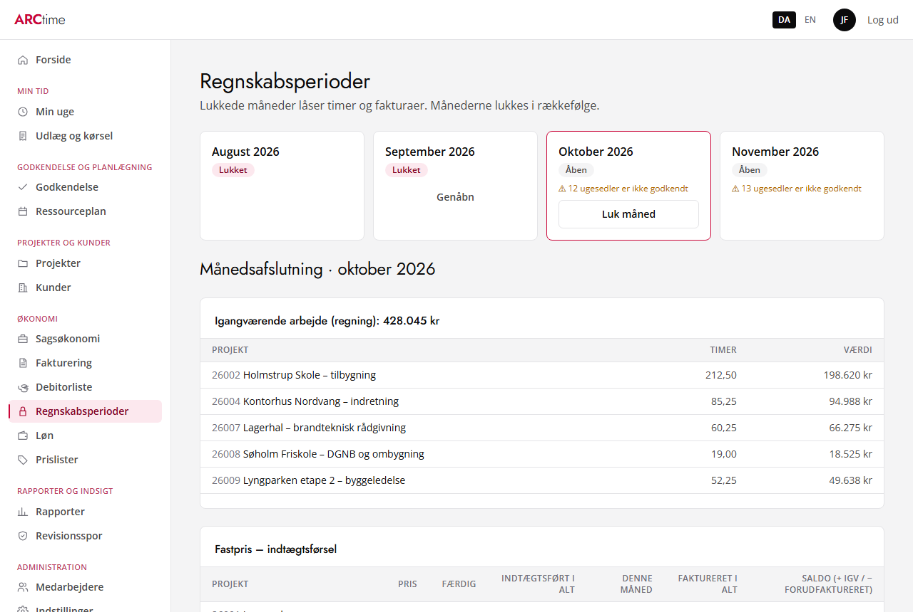
| Afsnit | Betydning |
|---|---|
| Igangværende arbejde (medgået tid) | Godkendte, ikke fakturerede timer på medgået tid pr. projekt – værdien af arbejde, der endnu ikke er faktureret. |
| Fastpris – indtægtsførsel | Pr. fastprisprojekt: pris, færdiggørelse, indtægtsført i alt og denne måned, faktureret i alt og saldoen (+ igangværende arbejde / − forudfaktureret). |
| Rammeaftaler – periodeafgrænsning | Faktureret mod brugt på rammeaftaler. |
Ved lukning gemmes et øjebliksbillede af indtægtsførslen.
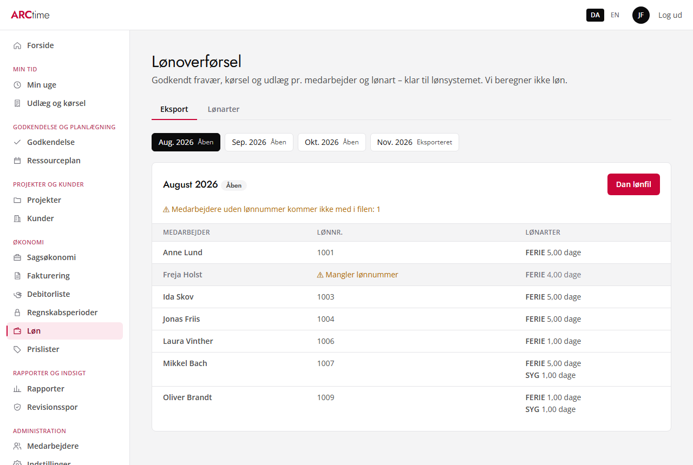
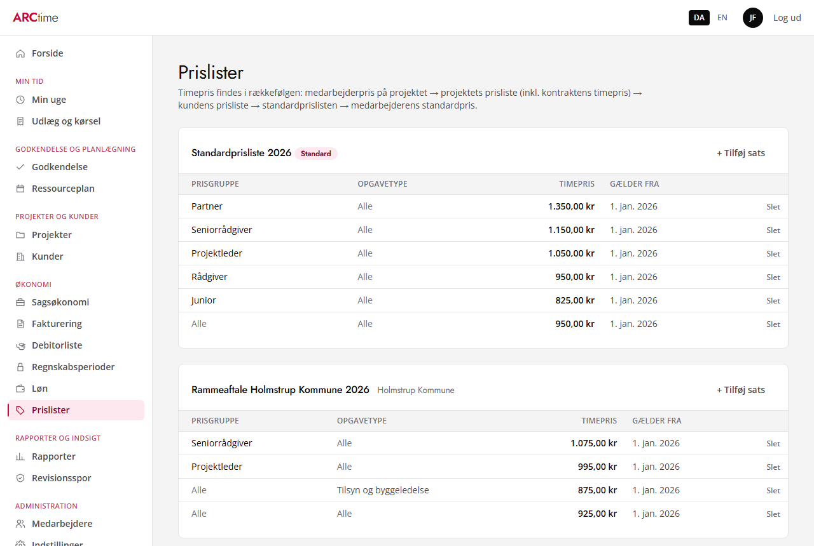
Timeprisen på en time findes i denne rækkefølge – den første, der passer, bruges:
En sats kan gælde en prisgruppe og/eller en opgavetype og har en “gælder fra”-dato, så prisstigninger kan lægges ind på forhånd.
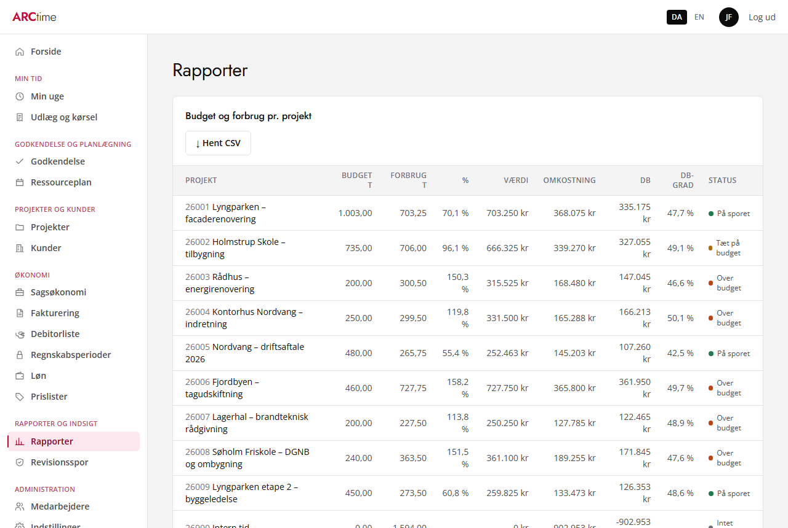
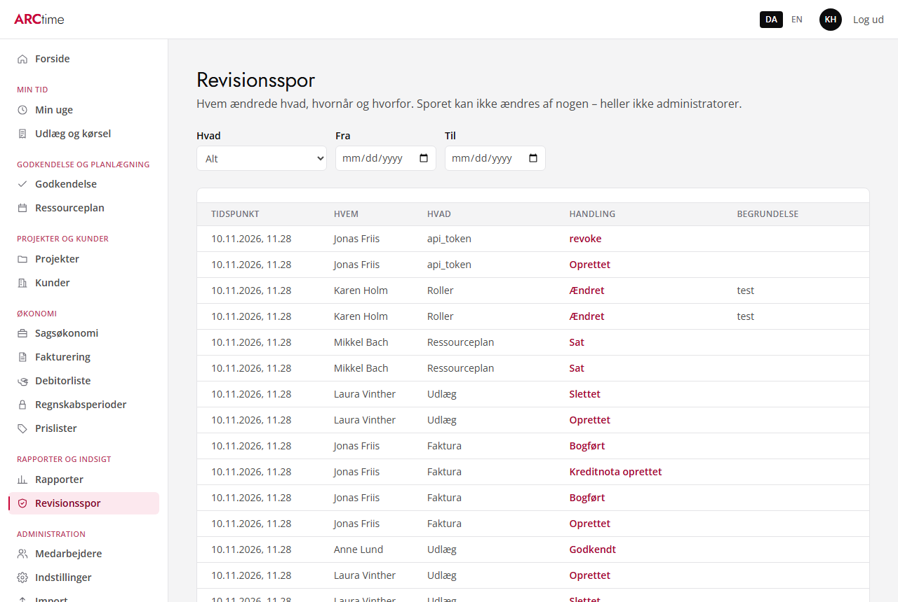
Alle vigtige ændringer logges: tidspunkt, hvem, hvad, handling og eventuel begrundelse. Klik på en række for at se før → efter. Sporet kan ikke ændres af nogen – heller ikke administratorer. Filtrér på type og periode. Økonomi, Ledelse og Admin har adgang.
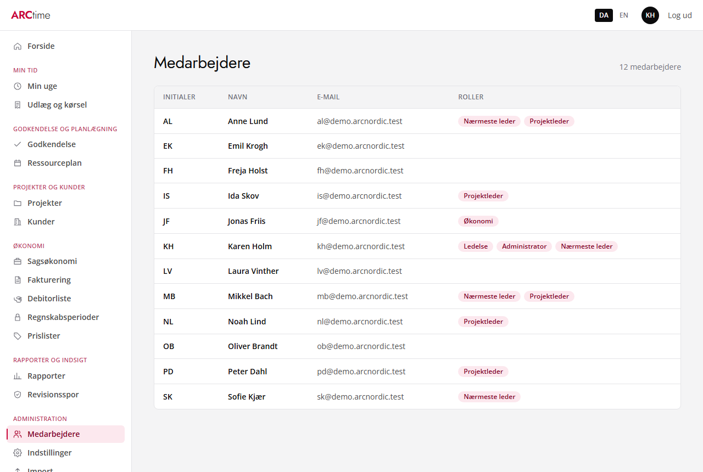
Oversigt over medarbejdere med initialer, e-mail og roller. Klik på en medarbejder for at redigere: roller, normtid (fra en dato), prisgruppe, standard timepris og kostpris, lønnummer, fratrædelse, flex og ferie ved opstart, og om en projektleder må oprette projekter. En fratrådt medarbejder sættes til ikke aktiv og logges straks ud. Admin kan lave GDPR-udtræk og pseudonymisere tidligere ansatte.
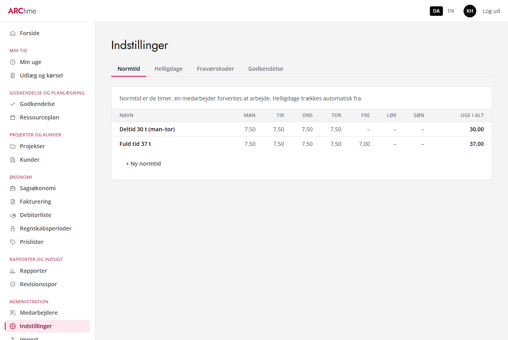
| Fane | Indhold |
|---|---|
| Normtid | Ugeskemaer (fx fuld tid 37 t, deltid 30 t man–tor) med timer pr. ugedag. |
| Helligdage | Danske helligdage, der trækkes fra normtiden (hele, halve eller timer). |
| Fraværskoder | Ferie, sygdom, barns sygedag, kursus mv., og om de tæller som fravær i flex og ferie. |
| Godkendelse | Ingen godkendelse · nærmeste leder · projektleder og derefter nærmeste leder. |
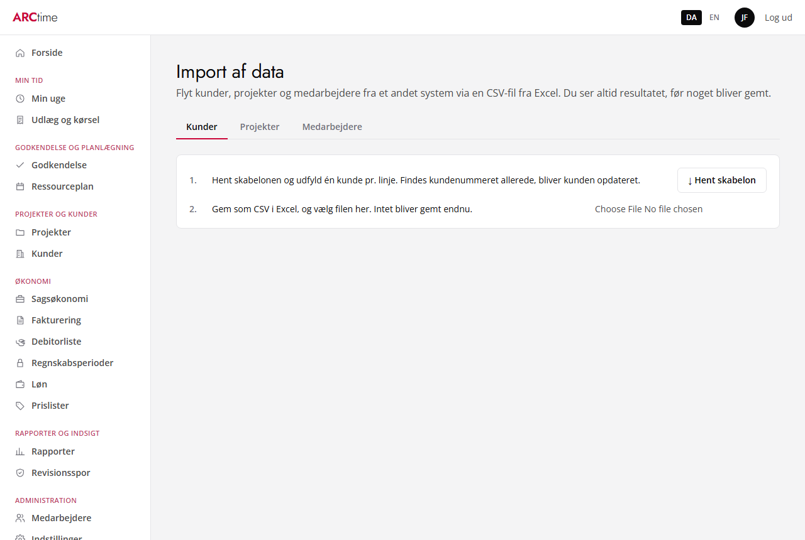